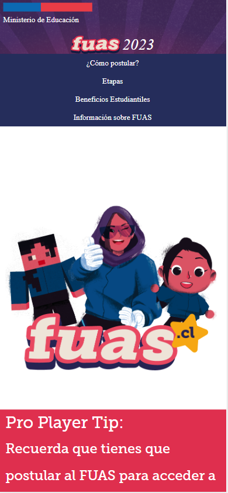

Contrast
Dafiti
Dafity.cl
Here we can see how the contrast in the colors enhance the webpage, the colors, the optimization of the images make clear and take out the best for this website.
Fitt's Law
League of Legends
leagueoflegends.com
We can clearly see how the Fitt's law is represented in this webpage, we can easily notice the big button to play, our response is rapidly to the target area of the function. That is the representation of the law, our movement and interaction with the device.
Visual Hierarchy
Fuas
Fuas.cl In this webpage we can notice how the visualized items on the page are placed where they should be, the most important is on the top, then the rest of the information is under in a hierarchical order.